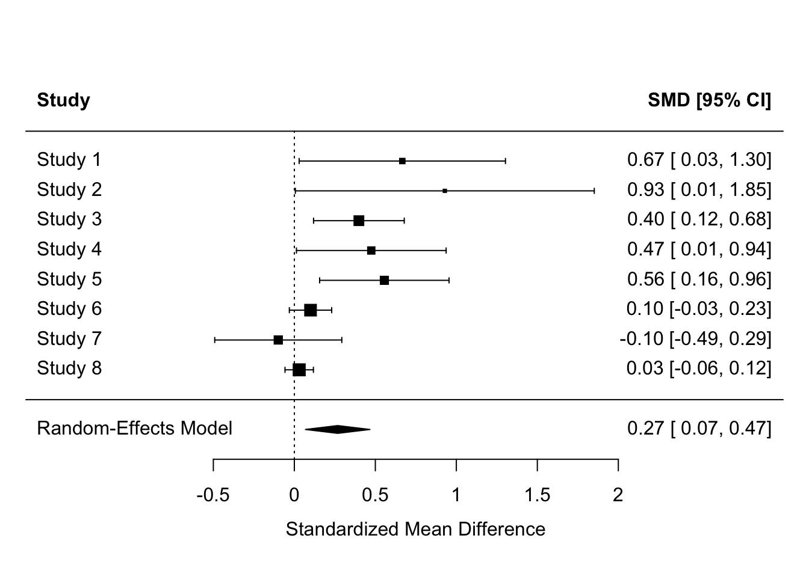
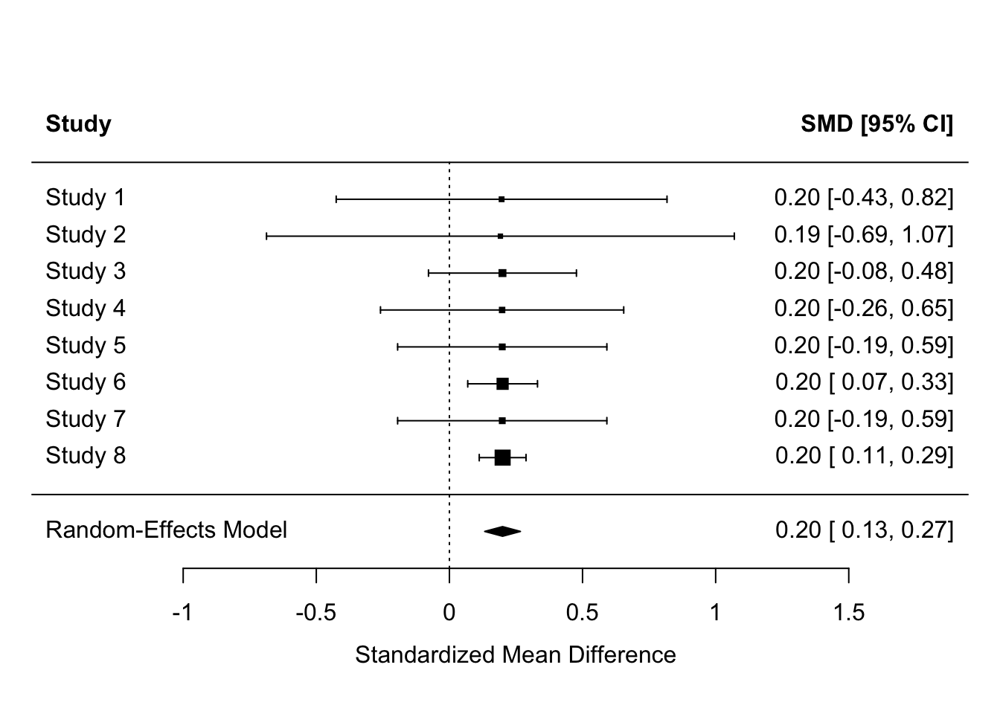
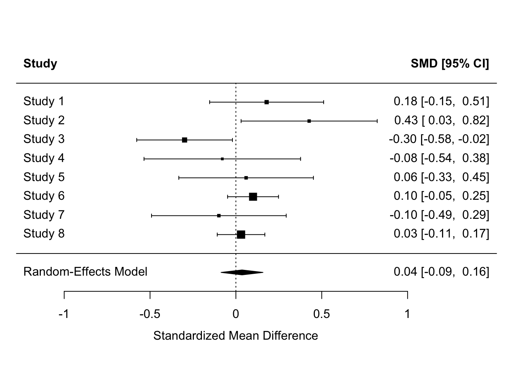
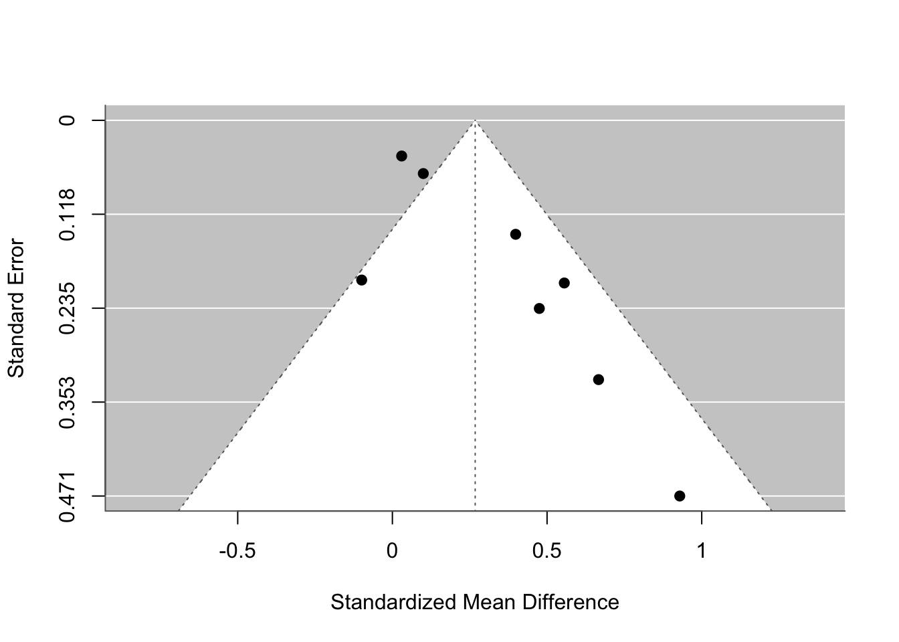
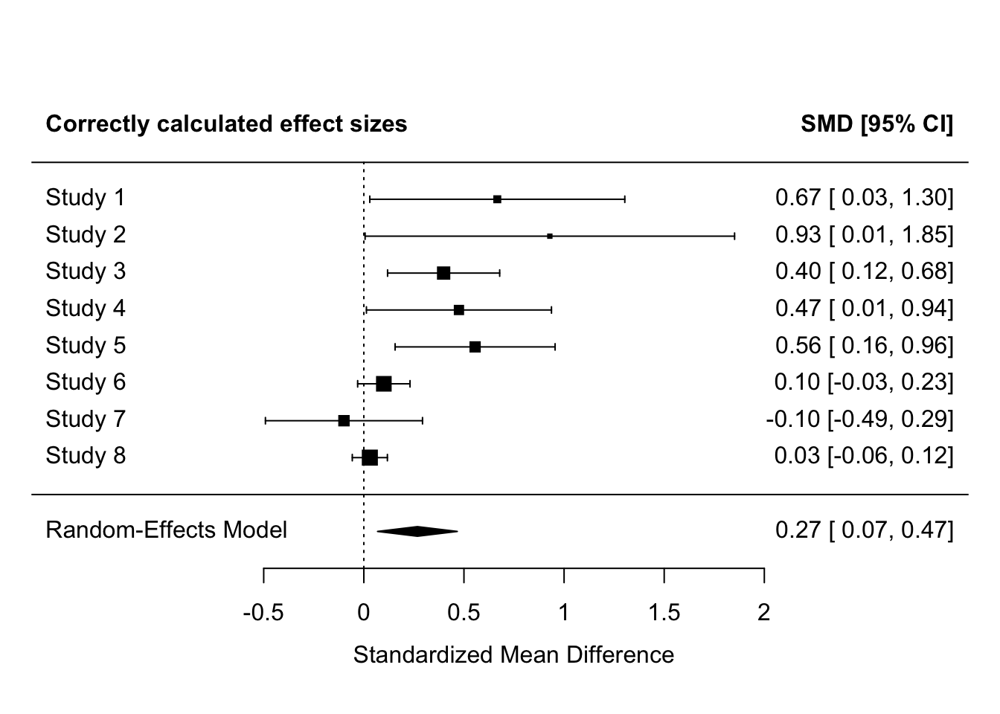
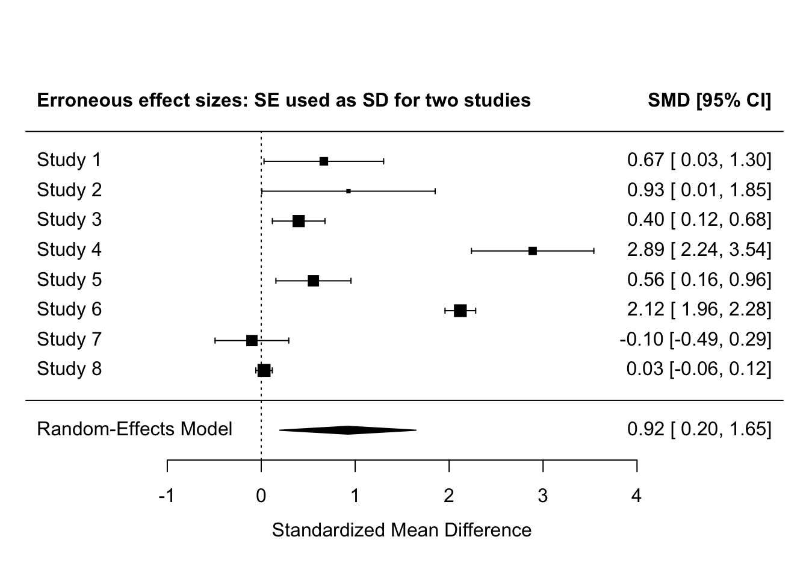
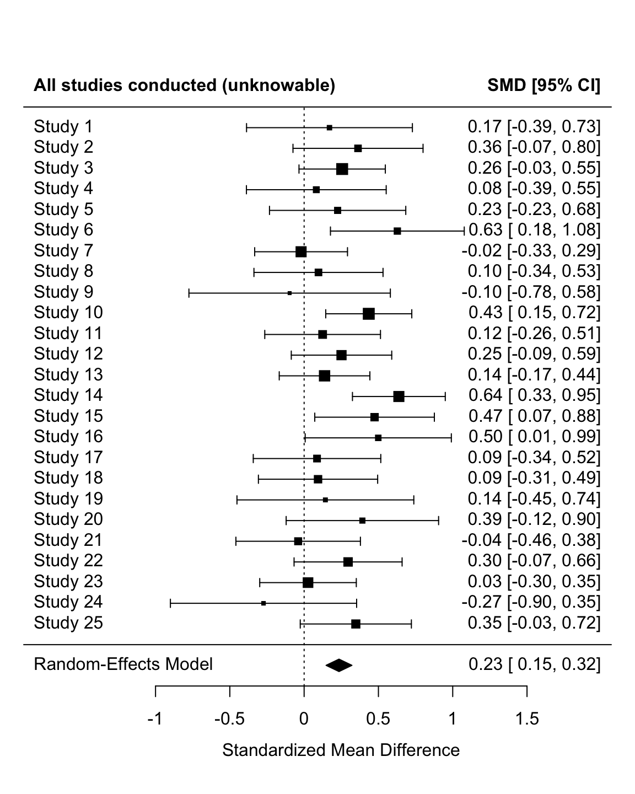
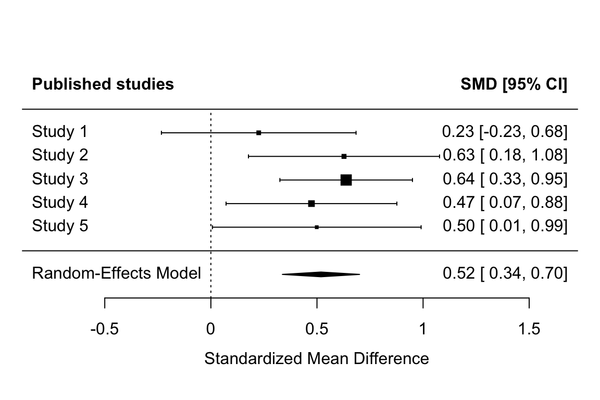

# dependencies ----
library(tidyr)
library(dplyr)
library(forcats)
library(readr)
library(purrr)
library(furrr)
library(ggplot2)
library(effsize)
library(janitor)
library(tibble)
#library(sn)
library(metafor)
library(parameters)
library(pwr)
library(ggstance)
# set the seed ----
# for the pseudo random number generator to make results reproducible
set.seed(123)19 Meta-analysis and publication bias ✎ Very rough draft
19.1 Dependencies
19.2 What is a meta-analysis?
Let’s start with some imagined summary statistics, and convert them to Cohen’s d effect sizes.
yi refers to the effect size, and vi refers to its variance (note that Standard Error = sqrt(variance)).
mean_intervention <- c(0.68, 0.97, 0.40, 0.48, 0.56, 0.10, -0.10, 0.03)
mean_control <- c( 0, 0, 0, 0, 0, 0, 0, 0)
sd_intervention <- c( 1, 1, 1, 1, 1, 1, 1, 1)
sd_control <- c( 1, 1, 1, 1, 1, 1, 1, 1)
n_intervention <- c( 20, 10, 100, 37, 50, 450, 50, 1000)
n_control <- c( 20, 10, 100, 37, 50, 450, 50, 1000)
es <- escalc(measure = "SMD",
m1i = mean_intervention,
m2i = mean_control,
sd1i = sd_intervention,
sd2i = sd_control,
n1i = n_intervention,
n2i = n_control)
es |>
as_tibble() |>
mutate_all(round_half_up, digits = 2)| yi | vi |
|---|---|
| 0.67 | 0.11 |
| 0.93 | 0.22 |
| 0.40 | 0.02 |
| 0.47 | 0.06 |
| 0.56 | 0.04 |
| 0.10 | 0.00 |
| -0.10 | 0.04 |
| 0.03 | 0.00 |
19.2.1 Fixed-effects meta-analysis
Aka Common-Effects or Equal-Effects.
The simplest form of meta-analysis - although it would not be acceptable to use anywhere these days - is simply the mean effect size.
es |>
summarize(mean_effect_size = round_half_up(mean(yi), digits = 2))| mean_effect_size |
|---|
| 0.38 |
Note that calculating the mean is equivalent to fitting an intercept only fixed-effects model (ie linear regression) with the effect sizes as the DV. The estimate of the intercept is equivalent to the mean effect size.
lm(yi ~ 1,
data = es) |>
model_parameters() | Parameter | Coefficient | SE | CI | CI_low | CI_high | t | df_error | p |
|---|---|---|---|---|---|---|---|---|
| (Intercept) | 0.38 | 0.12 | 0.95 | 0.09 | 0.67 | 3.09 | 7 | 0.0175128 |
Why is this not acceptable? Because it ignores the error associated with each effect size. A very simple meta-analysis might use weighted-mean effect sizes and weight them by the total sample size of each study:
weighted.mean(x = es$yi, w = n_intervention + n_control) |>
round_half_up(digits = 2) [1] 0.1Note that the weighted mean effect size is equivalent to an intercept only fixed-effects model (linear regression) with the effect sizes as the DV and the sample sizes as weights. The estimate of the intercept is equivalent to the weighted mean effect size.
lm(yi ~ 1,
weights = n_intervention + n_control,
data = es) |>
model_parameters()| Parameter | Coefficient | SE | CI | CI_low | CI_high | t | df_error | p |
|---|---|---|---|---|---|---|---|---|
| (Intercept) | 0.1 | 0.06 | 0.95 | -0.04 | 0.25 | 1.7 | 7 | 0.1330934 |
Quite early in the development of meta-analysis methods, people started to weight not by N but by inverse variance of the effect size, on the basis that things other than N can affect the precision of estimation of the effect size. This can be implemented as follows:
lm(yi ~ 1,
weights = 1/vi,
data = es) |>
model_parameters()| Parameter | Coefficient | SE | CI | CI_low | CI_high | t | df_error | p |
|---|---|---|---|---|---|---|---|---|
| (Intercept) | 0.1 | 0.06 | 0.95 | -0.04 | 0.24 | 1.7 | 7 | 0.1333889 |
The above linear regression produces comparable results as when you fit a ‘proper’ fixed-effects meta-analysis using the {metafor} package. There are some small differences in the effect size and its 95% CIs that aren’t important to understand here. The ‘Overall’ row reports the meta-analysis results.
rma(yi = yi,
vi = vi,
method = "FE", # fixed effect model
data = es) |>
model_parameters()| Parameter | Coefficient | SE | CI | CI_low | CI_high | z | p | Weight | Method |
|---|---|---|---|---|---|---|---|---|---|
| Study 1 | 0.67 | 0.32 | 0.95 | 0.03 | 1.30 | 2.05 | 0.0402282 | 9.47 | Meta-analysis using ‘metafor’ |
| Study 2 | 0.93 | 0.47 | 0.95 | 0.01 | 1.85 | 1.97 | 0.0484478 | 4.51 | Meta-analysis using ‘metafor’ |
| Study 3 | 0.40 | 0.14 | 0.95 | 0.12 | 0.68 | 2.79 | 0.0052685 | 49.03 | Meta-analysis using ‘metafor’ |
| Study 4 | 0.47 | 0.24 | 0.95 | 0.01 | 0.94 | 2.01 | 0.0439305 | 17.99 | Meta-analysis using ‘metafor’ |
| Study 5 | 0.56 | 0.20 | 0.95 | 0.16 | 0.96 | 2.73 | 0.0064032 | 24.07 | Meta-analysis using ‘metafor’ |
| Study 6 | 0.10 | 0.07 | 0.95 | -0.03 | 0.23 | 1.50 | 0.1341820 | 224.72 | Meta-analysis using ‘metafor’ |
| Study 7 | -0.10 | 0.20 | 0.95 | -0.49 | 0.29 | -0.50 | 0.6199953 | 24.97 | Meta-analysis using ‘metafor’ |
| Study 8 | 0.03 | 0.04 | 0.95 | -0.06 | 0.12 | 0.67 | 0.5025194 | 499.94 | Meta-analysis using ‘metafor’ |
| Overall | 0.10 | 0.03 | 0.95 | 0.03 | 0.17 | 2.97 | 0.0029437 | NA | Meta-analysis using ‘metafor’ |
19.2.2 Random-effects meta-analysis
There is a debate about whether Fixed-Effects vs. Random-Effects models should be employed in meta-analysis. Most recommendations come down on the side of Random-Effects, sometimes people recommend reporting the results of both. Briefly: FE models have less plausible assumptions about the differences between studies, but RE models suffer from putting less weight on the sample sizes of individual large studies.
Without getting into Random-Effects models conceptually, its useful to know that Random-Effects meta-analyses can also easily be fitted in {metafor}, and indeed are the default.
fit <-
rma(yi = yi,
vi = vi,
method = "REML", # default random effects model
data = es)
model_parameters(fit)| Parameter | Coefficient | SE | CI | CI_low | CI_high | z | p | Weight | Method |
|---|---|---|---|---|---|---|---|---|---|
| Study 1 | 0.67 | 0.32 | 0.95 | 0.03 | 1.30 | 2.05 | 0.0402282 | 9.47 | Meta-analysis using ‘metafor’ |
| Study 2 | 0.93 | 0.47 | 0.95 | 0.01 | 1.85 | 1.97 | 0.0484478 | 4.51 | Meta-analysis using ‘metafor’ |
| Study 3 | 0.40 | 0.14 | 0.95 | 0.12 | 0.68 | 2.79 | 0.0052685 | 49.03 | Meta-analysis using ‘metafor’ |
| Study 4 | 0.47 | 0.24 | 0.95 | 0.01 | 0.94 | 2.01 | 0.0439305 | 17.99 | Meta-analysis using ‘metafor’ |
| Study 5 | 0.56 | 0.20 | 0.95 | 0.16 | 0.96 | 2.73 | 0.0064032 | 24.07 | Meta-analysis using ‘metafor’ |
| Study 6 | 0.10 | 0.07 | 0.95 | -0.03 | 0.23 | 1.50 | 0.1341820 | 224.72 | Meta-analysis using ‘metafor’ |
| Study 7 | -0.10 | 0.20 | 0.95 | -0.49 | 0.29 | -0.50 | 0.6199953 | 24.97 | Meta-analysis using ‘metafor’ |
| Study 8 | 0.03 | 0.04 | 0.95 | -0.06 | 0.12 | 0.67 | 0.5025194 | 499.94 | Meta-analysis using ‘metafor’ |
| Overall | 0.27 | 0.10 | 0.95 | 0.07 | 0.47 | 2.64 | 0.0083808 | NA | Meta-analysis using ‘metafor’ |
Many meta-analyses also report forest plots, which list the studies, plot the individual and meta-analysis effect sizes and their 95% CIs, and report them numerically too for precision.
forest(fit, header = TRUE)
19.3 Why you can’t just count the proportion of significant p values
Studies have different power, so each tests the hypothesis with a different probability of detecting the effect assuming its true. Mixed results can therefore be found even when all have studied the same true hypothesis, even if they happened to all find exactly the same effect size.
- Counting p values: Only 2/8 studies found significant results [reject H1]
- Observed effect sizes: All studies found Cohen’s = 0.2 [accept H1]
- Meta-analysis: Cohen’s d = 0.20, 95% CI [0.13, 0.27] [accept H1]
es <- escalc(measure = "SMD",
m1i = c( 0.2, 0.2, 0.2, 0.2, 0.2, 0.2, 0.2, 0.2),
m2i = c( 0, 0, 0, 0, 0, 0, 0, 0),
sd1i = c( 1, 1, 1, 1, 1, 1, 1, 1),
sd2i = c( 1, 1, 1, 1, 1, 1, 1, 1),
n1i = c( 20, 10, 100, 37, 50, 450, 50, 1000),
n2i = c( 20, 10, 100, 37, 50, 450, 50, 1000))
rma(yi = yi,
vi = vi,
data = es,
method = "REML") |>
forest(header = TRUE)
Equally, the population effect might be zero, but some studies might still detect effects. Why might this happen?
es <- escalc(measure = "SMD",
m1i = c( 0.18, 0.43, -0.30, -0.08, 0.06, 0.10, -0.10, 0.03),
m2i = c( 0, 0, 0, 0, 0, 0, 0, 0),
sd1i = c( 1, 1, 1, 1, 1, 1, 1, 1),
sd2i = c( 1, 1, 1, 1, 1, 1, 1, 1),
n1i = c( 70, 50, 100, 37, 50, 350, 50, 400),
n2i = c( 70, 50, 100, 37, 50, 350, 50, 400))
rma(yi = yi,
vi = vi,
data = es,
method = "REML") |>
forest(header = TRUE)
Of course, the majority of studies might produce significant results and the meta-analysis also produce a significant effect, and we might still have doubts about whether the effect really exists or not. Why might this be?
es <- escalc(measure = "SMD",
m1i = c( 0.68, 0.97, 0.40, 0.48, 0.56, 0.10, -0.10, 0.03),
m2i = c( 0, 0, 0, 0, 0, 0, 0, 0),
sd1i = c( 1, 1, 1, 1, 1, 1, 1, 1),
sd2i = c( 1, 1, 1, 1, 1, 1, 1, 1),
n1i = c( 20, 10, 100, 37, 50, 450, 50, 1000),
n2i = c( 20, 10, 100, 37, 50, 450, 50, 1000))
res <-
rma(yi = yi,
vi = vi,
data = es,
method = "REML")
forest(res, header = TRUE)
funnel(res)
# funnel(res, level = c(90, 95, 99), refline = 0, legend = TRUE)19.4 Why we can’t have nice things
19.4.1 Confusing SD and SE when extracting summary statistics
Even articles published in the most prestigious journals and on topics that will impact patient care are highly susceptible to this, e.g., Metaxa & Clarke (2024) “Efficacy of psilocybin for treating symptoms of depression: systematic review and meta-analysis” was highlighted as doing this. It’s not even down to unclear labelling in the orignal study: even when they state “numerical data show means (SEM)”, as in this case, its often extracted as the SD.
Because SEs are MUCH smaller than SDs, incorrectly using SE causes Cohen’s d to be inflated - usually by a lot.
The below demonstrates this. The same summary statistics are used as in previous examples above. Effect sizes, their 95% CIs, and their SEM are then calculated. For two of the studies, the SDs are replaced with the SEs. The meta-analysis then shows this distortion on the individual effect sizes and the meta-analytic effect size.
# summary stats
mean_intervention <- c(0.68, 0.97, 0.40, 0.48, 0.56, 0.10, -0.10, 0.03)
mean_control <- c( 0, 0, 0, 0, 0, 0, 0, 0)
sd_intervention <- c( 1, 1, 1, 1, 1, 1, 1, 1)
sd_control <- c( 1, 1, 1, 1, 1, 1, 1, 1)
n_intervention <- c( 20, 10, 100, 37, 50, 450, 50, 1000)
n_control <- c( 20, 10, 100, 37, 50, 450, 50, 1000)
dat <-
tibble(m1i = mean_intervention,
m2i = mean_control,
sd1i = sd_intervention,
sd2i = sd_control,
n1i = n_intervention,
n2i = n_control) |>
rownames_to_column(var = "study") |>
# calculate SEs
mutate(se1i = sd1i/sqrt(n1i),
se2i = sd2i/sqrt(n2i)) |>
# replace SDs with SEs for two studies, studies 4 and 6
mutate(sd1i_error = ifelse(study %in% c("4", "6"), se1i, sd1i),
sd2i_error = ifelse(study %in% c("4", "6"), se2i, sd2i))
# calculate effect sizes properly
es_without_errors <-
escalc(measure = "SMD",
m1i = dat$m1i,
m2i = dat$m2i,
sd1i = dat$sd1i,
sd2i = dat$sd2i,
n1i = dat$n1i,
n2i = dat$n2i)
# calculate effect sizes with SE/SD errors
es_with_errors <-
escalc(measure = "SMD",
m1i = dat$m1i,
m2i = dat$m2i,
sd1i = dat$sd1i_error,
sd2i = dat$sd2i_error,
n1i = dat$n1i,
n2i = dat$n2i)
# meta-analyze the correctly calculated effect sizes
fit_correct <-
rma(yi = yi,
vi = vi,
method = "REML",
data = es_without_errors)
forest(fit_correct,
header = "Correctly calculated effect sizes")
# meta-analyze the erroneously calculated effect sizes
fit_errors <-
rma(yi = yi,
vi = vi,
method = "REML",
data = es_with_errors)
forest(fit_errors,
header = "Erroneous effect sizes: SE used as SD for two studies")
Making this error for 2 of 8 studies here inflates the effect sizes for those studies to be extremely and implausibly large - Cohen’s d > 2. This also greatly increases the meta-analysis effect size.
- Note that this could be simulated more extensively as an end-of-course assignment. I.e., assuming different true effect sizes and prevalences of misinterpreting SE as SD, what is the proportionate distortion of of meta-effect sizes in the literature? For a given true effect size, what is the probability of observing a true effect size of X in a component study relative to it being a coding error? (e.g., if true effect size is 0.2, what proportion of observed effect sizes of 1.5 are erroneous?)
19.4.2 Publication bias
What proportion of studies that are conducted are actually published?
Given what we know about publication bias, perhaps we should instead ask: what proportion of studies with significant results are published? And what proportion with non-significant results are published?
It is very hard to know how to interpret and synthesize the published literature without knowing this, because we don’t know what is hidden from us.
Several estimates of the prevalence of significant vs non-significant results in the literature exist.
- Sterling (1959) found that 97% of psychology articles reported support for their hypothesis.
- Sterling et al. (1989) later found that this result was nearly unchanged 30 years later (95%).
- Another 20 years later, Fanelli (2010) found it was around 90% (albeit using different journals).
However, all of these estimate estimate the opposite conditional probability: the probability of significance given being published: P(significant | published).
We actually need to know the opposite, the probability of being published given significance: P(published | significant), and the probability of being published given non-significance: P(published | nonsignificant).
Worryingly, there is very little research on this. I only know of two studies that provide estimates of this (Franco et al. (2014; 2016):
- P(published | significant) = 57/93 = 0.61
- P(published | nonsignificant) = 11/49 = 0.22
However, registered databases of approved studies are not typical in psychology, so these values are likely to be representative of psychology as a whole.
We can also look to other fields such as medical trials. Both the EU Clinical Trials Register (EUCTR) and the US Food and Drug Administration’s (FDA) ClinicalTrials.gov registries make it a legal requirement to publish clinical trials within 12 months of their completion. So, perhaps at least in some areas that really matter, and where there is a legal requirement to do so, null results don’t sit unpublished? Unfortunately:
- Goldacre et al. (2018) found that only 50% of 7274 EU trials were published within that time frame.
- DeVito, Bacon, & Goldacre (2020) found that only 41% of 4209 US trials were published within that time frame and 64% were published ever.
More extreme values for these conditional probabilities might therefore be more realistic for psychology. In my anecdotal experience, they are more like: P(published | significant) = 0.70 and P(published | nonsignificant) = 0.05.
Let’s simulate the impact of this on rate of bias for a given literature. In this simulation, each iteration is a given study in the literature, so the number of iterations (25) is much smaller than a typical simulation.
# remove all objects from environment ----
#rm(list = ls())
# dependencies ----
# repeated here for the sake of completeness
library(tidyr)
library(dplyr)
library(tibble)
library(forcats)
library(purrr)
library(ggplot2)
library(janitor)
library(metafor)
# set the seed ----
# for the pseudo random number generator to make results reproducible
set.seed(46)
# define data generating function ----
generate_data <- function(n_minimum,
n_max,
mean_control,
mean_intervention,
sd_control,
sd_intervention) {
require(tibble)
require(dplyr)
require(forcats)
n_per_condition <- runif(n = 1, min = n_minimum, max = n_max)
data_control <-
tibble(condition = "control",
score = rnorm(n = n_per_condition, mean = mean_control, sd = sd_control))
data_intervention <-
tibble(condition = "intervention",
score = rnorm(n = n_per_condition, mean = mean_intervention, sd = sd_intervention))
data <- bind_rows(data_control,
data_intervention) |>
# control's factor levels must be ordered so that intervention is the first level and control is the second
# this ensures that positive cohen's d values refer to intervention > control and not the other way around.
mutate(condition = fct_relevel(condition, "intervention", "control"))
return(data)
}
# define data analysis function ----
analyse_data <- function(data, probability_sig_published, probability_nonsig_published) {
require(effsize)
require(tibble)
res_n <- data |>
count()
res_t_test <- t.test(formula = score ~ condition,
data = data,
var.equal = FALSE,
alternative = "two.sided")
res_cohens_d <- effsize::cohen.d(formula = score ~ condition, # new addition: also fit cohen's d
within = FALSE,
data = data)
res <- tibble(total_n = res_n$n,
p = res_t_test$p.value,
cohens_d_estimate = res_cohens_d$estimate, # new addition: save cohen's d and its 95% CIs to the results tibble
cohens_d_ci_lower = res_cohens_d$conf.int["lower"],
cohens_d_ci_upper = res_cohens_d$conf.int["upper"]) |>
mutate(cohens_d_se = (cohens_d_ci_upper - cohens_d_ci_lower)/(1.96*2),
cohens_d_variance = cohens_d_se^2) |> # variance of effect size = its standard error squared
mutate(
# define result as (non)significant
significant = p < .05,
# generate a random luck probability between 0 and 1
luck = runif(n = 1, min = 0, max = 1),
# decide if the result is published or not based on whether:
# (a) the result was significant and the luck variable is higher than the probability of significant results being published, or
# (b) the result was nonsignificant and the luck variable is higher than the probability of nonsignificant results being published
published = ifelse((significant & luck >= (1 - probability_sig_published)) |
(!significant & luck >= (1 - probability_nonsig_published)), TRUE, FALSE)
)
return(res)
}
# define experiment parameters ----
experiment_parameters_grid <- expand_grid(
n_minimum = 10,
n_maximum = 100,
mean_control = 0,
mean_intervention = 0.25,
sd_control = 1,
sd_intervention = 1,
probability_sig_published = 0.70, # 0.61 from Franco et al 2014, 2016
probability_nonsig_published = 0.05, # 0.22 from Franco et al 2014, 2016
iteration = 1:25 # here iterations are studies, so the number is small relative to a normal simulation
)
# run simulation ----
simulation <-
# using the experiment parameters
experiment_parameters_grid |>
# generate data using the data generating function and the parameters relevant to data generation
mutate(generated_data = pmap(list(n_minimum,
n_maximum,
mean_control,
mean_intervention,
sd_control,
sd_intervention),
generate_data)) |>
# apply the analysis function to the generated data using the parameters relevant to analysis
mutate(analysis_results = pmap(list(generated_data,
probability_sig_published,
probability_nonsig_published),
analyse_data))
# summarise simulation results over the iterations ----
simulation_unnested <- simulation |>
unnest(analysis_results)# meta analysis and forest plot
fit_all <-
rma(yi = cohens_d_estimate,
vi = cohens_d_variance,
data = simulation_unnested,
method = "REML")
forest(fit_all, header = c("All studies conducted (unknowable)", "SMD [95% CI]"), xlab = "Standardized Mean Difference")
fit_published <-
rma(yi = cohens_d_estimate,
vi = cohens_d_variance,
data = simulation_unnested |> filter(published == TRUE),
method = "REML")
forest(fit_published, header = c("Published studies", "SMD [95% CI]"), xlab = "Standardized Mean Difference")
Note that the non-overlap between the confidence intervals between the two meta-analyses imply that the published literature has a significantly higher effect size than the actual studies run.
Remember, however, that (a) our values for the prior probability that (non)significant results are published are not based on any good evidence, and (b) that this only simulates a single literature. These results try to illustrate a point, they don’t comprehensively simulate the potential impact of publication bias across a range of conditions.
19.5 Power of Egger’s Test of publication bias
How would we simulate at two levels, studies and also meta-analyses of them?
How could we assess the power of a method like Egger’s test for funnel plot asymmetry, as implemented by regtest(res, model = "lm")?
[needs work]
# # remove all objects from environment ----
# #rm(list = ls())
#
#
# # run furrr:::future_map in parallel
# plan(multisession)
#
# # dependencies ----
# # repeated here for the sake of completeness
#
# library(tidyr)
# library(dplyr)
# library(tibble)
# library(forcats)
# library(purrr)
# library(ggplot2)
# library(janitor)
# library(metafor)
#
# # define data generating function ----
# generate_data <- function(n_min,
# n_max,
# mean_control,
# mean_intervention,
# sd_control,
# sd_intervention) {
#
#
# n_per_condition <- runif(n = 1, min = n_min, max = n_max)
#
# data_control <-
# tibble(condition = "control",
# score = rnorm(n = n_per_condition, mean = mean_control, sd = sd_control))
#
# data_intervention <-
# tibble(condition = "intervention",
# score = rnorm(n = n_per_condition, mean = mean_intervention, sd = sd_intervention))
#
# data <- bind_rows(data_control,
# data_intervention) |>
# # control's factor levels must be ordered so that intervention is the first level and control is the second
# # this ensures that positive cohen's d values refer to intervention > control and not the other way around.
# mutate(condition = fct_relevel(condition, "intervention", "control"))
#
# return(data)
# }
#
#
# # define data analysis function ----
# analyse_study <- function(data, probability_sig_published, probability_nonsig_published) {
#
# res_n <- data |>
# count()
#
# res_t_test <- t.test(formula = score ~ condition,
# data = data,
# var.equal = FALSE,
# alternative = "two.sided")
#
# res_cohens_d <- effsize::cohen.d(formula = score ~ condition, # new addition: also fit cohen's d
# within = FALSE,
# data = data)
#
# res <- tibble(total_n = res_n$n,
# p = res_t_test$p.value,
# cohens_d_estimate = res_cohens_d$estimate, # new addition: save cohen's d and its 95% CIs to the results tibble
# cohens_d_ci_lower = res_cohens_d$conf.int["lower"],
# cohens_d_ci_upper = res_cohens_d$conf.int["upper"]) |>
# mutate(cohens_d_se = (cohens_d_ci_upper - cohens_d_ci_lower)/(1.96*2),
# cohens_d_variance = cohens_d_se^2) |> # variance of effect size = its standard error squared
# mutate(
# # define result as (non)significant
# significant = p < .05,
# # generate a random luck probability between 0 and 1
# luck = runif(n = 1, min = 0, max = 1),
# # decide if the result is published or not based on whether:
# # (a) the result was significant and the luck variable is higher than the probability of significant results being published, or
# # (b) the result was nonsignificant and the luck variable is higher than the probability of nonsignificant results being published
# published = ifelse((significant & luck >= (1 - probability_sig_published)) |
# (!significant & luck >= (1 - probability_nonsig_published)), TRUE, FALSE)
# )
#
# return(res)
# }
#
# analyse_meta <- function(data){
#
# data_for_meta <- data |>
# filter(published == TRUE)
#
# if(nrow(data_for_meta) > 0){
# fit_meta <-
# rma(yi = cohens_d_estimate,
# vi = cohens_d_variance,
# data = data_for_meta,
# method = "REML")
# } else {
# fit_meta <- NULL
# }
#
# return(fit_meta)
# }
#
# results_meta <- function(fit_meta){
# results <- tibble(meta_es = as.numeric(fit_meta$b[,1]))
# return(results)
# }
#
# analyse_meta_publication_bias <- function(fit_meta) {
# # sometimes 0 studies are published, so we need ways to handle this absence of data which would cause an error
# safe_regtest <- possibly(
# function(fit) {
# fit_egger <- regtest(fit, model = "lm")
# tibble(
# egger_p = ifelse(!is.nan(fit_egger$pval), fit_egger$pval, NA_real_),
# egger_corrected_es = ifelse(!is.nan(fit_egger$est), fit_egger$est, NA_real_)
# )
# },
# otherwise = tibble(egger_p = NA_real_, egger_corrected_es = NA_real_)
# )
#
# if (is.null(fit_meta)) {
# return(tibble(egger_p = NA_real_, egger_corrected_es = NA_real_))
# }
#
# safe_regtest(fit_meta)
# }
#
#
# # define experiment parameters ----
# experiment_parameters_grid <- bind_rows(
# expand_grid(
# n_min = 10,
# n_max = 100,
# mean_control = 0,
# mean_intervention = c(0, 0.2, 0.5, 0.8),
# sd_control = 1,
# sd_intervention = 1,
# probability_sig_published = 0.70, # 0.61 from Franco et al 2014, 2016
# probability_nonsig_published = 0.05, # 0.22 from Franco et al 2014, 2016
# iteration_meta = 1:1000, # here iterations are meta analyses
# k_studies = 10, # for reference later, number must match max iterations below
# iteration_study = 1:10 # here iterations are studies
# ),
# expand_grid(
# n_min = 10,
# n_max = 100,
# mean_control = 0,
# mean_intervention = c(0, 0.2, 0.5, 0.8),
# sd_control = 1,
# sd_intervention = 1,
# probability_sig_published = 0.70, # 0.61 from Franco et al 2014, 2016
# probability_nonsig_published = 0.05, # 0.22 from Franco et al 2014, 2016
# iteration_meta = 1:1000, # here iterations are meta analyses
# k_studies = 20, # for reference later, number must match max iterations below
# iteration_study = 1:20 # here iterations are studies
# ),
# expand_grid(
# n_min = 10,
# n_max = 100,
# mean_control = 0,
# mean_intervention = c(0, 0.2, 0.5, 0.8),
# sd_control = 1,
# sd_intervention = 1,
# probability_sig_published = 0.70, # 0.61 from Franco et al 2014, 2016
# probability_nonsig_published = 0.05, # 0.22 from Franco et al 2014, 2016
# iteration_meta = 1:1000, # here iterations are meta analyses
# k_studies = 30, # for reference later, number must match max iterations below
# iteration_study = 1:30 # here iterations are studies
# )
# )
#
# if(file.exists("simulation_summary.rds")) {
# simulation_summary <- read_rds("../data/simulation_summary_12.rds")
# } else {
#
# # set the seed ----
# # for the pseudo random number generator to make results reproducible
# set.seed(46)
#
# # run study level simulation ----
# simulation_studies <-
# # using the experiment parameters
# experiment_parameters_grid |>
#
# # generate data using the data generating function and the parameters relevant to data generation
# mutate(generated_data = future_pmap(list(n_min = n_min,
# n_max = n_max,
# mean_control = mean_control,
# mean_intervention = mean_intervention,
# sd_control = sd_control,
# sd_intervention = sd_intervention),
# generate_data,
# .progress = TRUE,
# .options = furrr_options(seed = TRUE))) |>
#
# # apply the analysis function to the generated data using the parameters relevant to analysis
# mutate(analysis_results_study = future_pmap(list(data = generated_data,
# probability_sig_published = probability_sig_published,
# probability_nonsig_published = probability_nonsig_published),
# analyse_study,
# .progress = TRUE,
# .options = furrr_options(seed = TRUE)))
#
#
# # run meta-analysis simulation ----
# simulation_meta <- simulation_studies |>
# unnest(analysis_results_study) |>
# select(-generated_data) |>
# group_by(n_min, n_max, mean_control, mean_intervention, sd_control, sd_intervention, probability_sig_published, probability_nonsig_published, iteration_meta, k_studies) |>
# nest(.key = "meta_data") |>
# ungroup() |>
# # at this point we have the equivalent of the usual steps up to and including generate data. next analyze that data
# mutate(analysis_meta = future_pmap(list(data = meta_data),
# analyse_meta,
# .progress = TRUE,
# .options = furrr_options(seed = TRUE))) |>
# # extract meta ES
# mutate(meta_es = future_pmap(list(fit_meta = analysis_meta),
# results_meta,
# .progress = TRUE,
# .options = furrr_options(seed = TRUE)),
# .progress = TRUE,
# seed = TRUE) |>
# unnest(meta_es) |>
# # run eggers test
# mutate(analysis_meta_publication_bias = future_pmap(list(fit_meta = analysis_meta),
# analyse_meta_publication_bias,
# .progress = TRUE,
# .options = furrr_options(seed = TRUE)))
#
# # summarize across meta iterations
# simulation_summary <- simulation_meta |>
# unnest(analysis_meta_publication_bias) |>
# rename(population_es = mean_intervention) |>
# group_by(population_es, probability_sig_published, probability_nonsig_published, k_studies) |>
# summarize(mean_meta_es = mean(meta_es),
# egger_proportion_significant = mean(egger_p < .05, na.rm = TRUE),
# mean_egger_corrected_es = mean(egger_corrected_es, na.rm = TRUE))
#
# write_rds(simulation_summary, "../data/simulation_summary_12.rds")
# }
#
# # print table
# simulation_summary |>
# mutate_if(is.numeric, round_half_up, digits = 2)
# Error in `mutate()`:
# ℹ In argument: `analysis_meta = future_pmap(...)`.
# Caused by error:
# ℹ In index: 384.
# Caused by error in `rma()`:
# ! Fisher scoring algorithm did not converge. See 'help(rma)' for possible remedies.